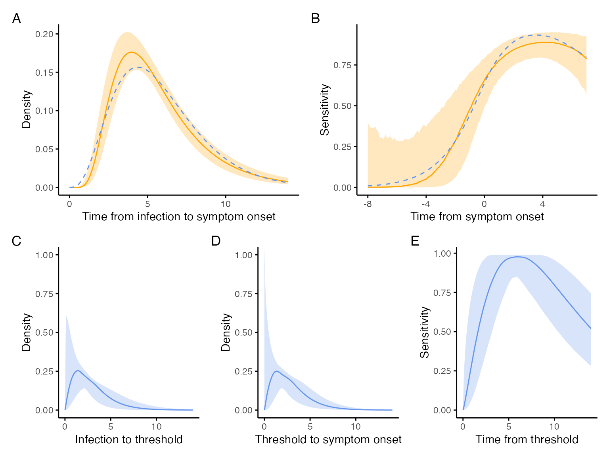
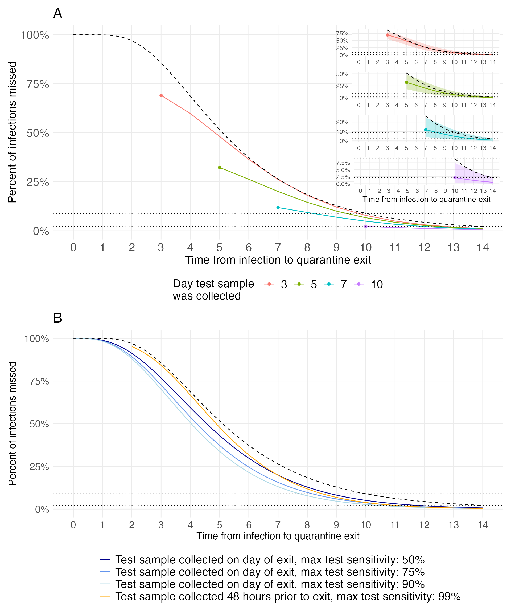

figures.Rmd
estimate_shenzhen <- function(k, t, shape_y, shape_a, rate_a, rate) {
dgamma(k, shape_y, rate) *
get_fnr(time = k + t, shape = shape_a, rate = rate_a)
}
diff_shenzhen <- function(t, shape_a, rate_a, shape_y, rate) {
integrate(estimate_shenzhen, 0, Inf, t = t, shape_a = shape_a,
rate_a = rate_a, shape_y = shape_y, rate = rate)$value -
get_shenzhen_estimate(t)
}
er <- function(x, shape, rate) {
shape_a <- x[1]
rate_a <- x[2]
shape_y <- x[3]
shape_x <- x[4]
sum(map_dbl(seq(-8, 7, 1), diff_shenzhen, shape_a = shape_a,
rate_a = rate_a, shape_y = shape_y, rate = rate)^2) +
((shape_y + shape_x) - shape)^2
}
run_optimization <- function() {
fit_incubation <- fitdistrplus::fitdist(
rlnorm(10000, rnorm(1, 1.63, 0.06122), rnorm(1, 0.5, 0.0255102)), "gamma")
o <- nmkb(c(2.3, 0.2, 0.5, 0.5), er,
lower = c(1, 0.1, 0.1, 0.1),
rate = fit_incubation$estimate[2],
shape = fit_incubation$estimate[1])
data.frame(
shape_a = o$par[1],
rate_a = o$par[2],
shape_y = o$par[3],
shape_x = o$par[4],
shape_sym = fit_incubation$estimate[1],
rate_sym = fit_incubation$estimate[2],
error = o$value[1]
)
}
run_optimization <- possibly(run_optimization,
otherwise = data.frame(
shape_a = NA,
rate_a = NA,
shape_y = NA,
shape_x = NA,
shape_sym = NA,
rate_sym = NA,
error = NA
))
sims <- 5000
set.seed(1)
out <- map_df(1:sims, ~run_optimization())
out %>%
summarise(shape_a_mean = mean(shape_a),
shape_a_sd = sd(shape_a),
rate_a_mean = mean(rate_a),
rate_a_sd = sd(rate_a),
shape_y_mean = mean(shape_y),
shape_y_sd = sd(shape_y),
shape_x_mean = mean(shape_x),
shape_x_sd = sd(shape_x),
rate_mean = mean(rate_sym),
rate_sd = sd(rate_sym),
sym_mean = mean(shape_sym),
.groups = "drop") -> out_sum
knitr::kable(out_sum)| shape_a_mean | shape_a_sd | rate_a_mean | rate_a_sd | shape_y_mean | shape_y_sd | shape_x_mean | shape_x_sd | rate_mean | rate_sd | sym_mean |
|---|---|---|---|---|---|---|---|---|---|---|
| 2.250097 | 0.3992711 | 0.2137284 | 0.0389069 | 2.091456 | 0.7466036 | 2.093612 | 0.4981271 | 0.7269191 | 0.0939308 | 4.189122 |
incubation <- tibble(
x = rep(seq(0, 14, by = 0.1), sims),
y = dlnorm(x, rnorm(sims, 1.63, 0.06122), rnorm(sims, 0.50, 0.0255102))
) %>%
group_by(x) %>%
summarise(m = median(y),
lcl = quantile(y, 0.025),
ucl = quantile(y, 0.975),
.groups = "drop")
incubation_plot <- incubation %>%
ggplot(aes(x, m)) +
geom_line(color = "orange") +
geom_ribbon(aes(ymin = lcl, ymax = ucl), color = NA, alpha = 0.25, fill = "orange") +
labs(x = "Time from infection to symptom onset",
y = "Density") +
theme_minimal() +
theme(panel.grid = element_blank(),
axis.line = element_line(),
axis.ticks = element_line())
shenzhen_sensitivity <- tibble(
x = rep(seq(-8, 7, by = 0.1), sims),
y = map_dbl(x, get_shenzhen_estimate)
) %>%
group_by(x) %>%
summarise(m = 1 - median(y),
lcl = 1 - quantile(y, 0.025),
ucl = 1 - quantile(y, 0.975),
.groups = "drop")
shenzhen_sensitivity_p <-
shenzhen_sensitivity %>%
ggplot(aes(x, m)) +
geom_line(color = "orange") +
geom_ribbon(aes(ymin = lcl, ymax = ucl), color = NA, alpha = 0.25, fill = "orange") +
labs(x = "Time from symptom onset",
y = "Sensitivity") +
theme_minimal() +
theme(panel.grid = element_blank(),
axis.line = element_line(),
axis.ticks = element_line())
exposure_to_threshold <- tibble(
x = rep(seq(0, 14, 0.1), sims),
y = dgamma(x, shape = out$shape_x, rate = out$rate_sym)
) %>%
group_by(x) %>%
summarise(m = median(y),
lcl = quantile(y, 0.025),
ucl = quantile(y, 0.975),
.groups = "drop") %>%
ggplot(aes(x, m)) +
geom_line(color = "cornflower blue") +
geom_ribbon(aes(ymin = lcl, ymax = ucl), alpha = 0.25, color = NA, fill = "cornflower blue") +
coord_cartesian(ylim = c(0, 1)) +
labs(x = "Infection to threshold",
y = "Density") +
theme_minimal() +
theme(panel.grid = element_blank(),
axis.line = element_line(),
axis.ticks = element_line())
threshold_to_symtpoms <- tibble(
x = rep(seq(0, 14, 0.1), sims),
y = dgamma(x, shape = out$shape_y, rate = out$rate_sym)
) %>%
group_by(x) %>%
summarise(m = median(y),
lcl = quantile(y, 0.025),
ucl = quantile(y, 0.975),
.groups = "drop") %>%
ggplot(aes(x, m)) +
geom_line(color = "cornflower blue") +
geom_ribbon(aes(ymin = lcl, ymax = ucl), alpha = 0.25, color = NA, fill = "cornflower blue") +
coord_cartesian(ylim = c(0, 1)) +
labs(x = "Threshold to symptom onset",
y = "Density") +
theme_minimal() +
theme(panel.grid = element_blank(),
axis.line = element_line(),
axis.ticks = element_line())
get_sensitivity_sym <- function(t, shape_a, rate_a, shape_y, rate) {
integrate(estimate_shenzhen, 0, Inf, t = t, shape_a = shape_a,
rate_a = rate_a, shape_y = shape_y, rate = rate)$value
}
params <- tibble(
shape_a = out$shape_a,
rate_a = out$rate_a,
shape_y = out$shape_y,
rate = out$rate_sym
)
params <- expand_grid(
t = seq(-8, 7, 0.1),
params
)
sensitivity <- params %>%
mutate(sens = pmap_dbl(params, get_sensitivity_sym))
params <- tibble(
shape = out$shape_a,
rate = out$rate_a
)
params <- expand_grid(
t = seq(0, 14, 0.1),
params
)
sens <- params %>%
mutate(y = pmap_dbl(params, get_sensitivity)) %>%
group_by(t) %>%
summarise(m = median(y),
lcl = quantile(y, 0.025),
ucl = quantile(y, 0.975),
.groups = "drop")
sensitivity_summ <- sensitivity %>%
group_by(t) %>%
summarise(m = 1 - median(sens),
lcl = 1 - quantile(sens, 0.025),
ucl = 1 - quantile(sens, 0.975),
.groups = "drop")
inferred_sensitivity <- sens %>%
ggplot(aes(t, m)) +
geom_line(color = "cornflower blue") +
geom_ribbon(aes(ymin = lcl, ymax = ucl), alpha = 0.25, color = NA, fill = "cornflower blue") +
labs(x = "Time from threshold",
y = "Sensitivity") +
theme_minimal() +
theme(panel.grid = element_blank(),
axis.line = element_line(),
axis.ticks = element_line())
incubation_inferred <- tibble(
t = rep(seq(0, 14, 0.1), sims),
y = dgamma(t, shape = out$shape_x + out$shape_y, rate = out$rate_sym),
) %>%
group_by(t) %>%
summarise(m = median(y),
lcl = quantile(y, 0.025),
ucl = quantile(y, 0.975),
.groups = "drop")
library(patchwork)
incubation_plot <- incubation_plot +
geom_line(data = incubation_inferred, aes(t, m), color = "cornflower blue", lty = 2)
shenzhen_sensitivity_p <- shenzhen_sensitivity_p +
geom_line(data = sensitivity_summ, aes(t, m), color = "cornflower blue", lty = 2)
(incubation_plot | shenzhen_sensitivity_p) / (exposure_to_threshold | threshold_to_symtpoms | inferred_sensitivity) +
plot_annotation(tag_levels = 'A')
sims <- nrow(out)
set.seed(1)
params <- tibble(
id = 1:sims,
shape_fnr = out$shape_a,
rate_fnr = out$rate_a,
shape_exposure_to_threshold = out$shape_x,
shape_threshold_to_symptoms = out$shape_y,
rate = out$rate_sym
)
vals <- expand_grid(
test_time = c(3, 5, 7, 10),
additional_quarantine_time = 0:14,
id = 1:sims
) %>%
filter(test_time + additional_quarantine_time <= 14) %>%
left_join(params, by = "id") %>%
select(-id)
d <- vals %>%
mutate(p = pmap_dbl(vals, possibly(get_prob_missed_infection, otherwise = NA)),
qt = test_time + additional_quarantine_time)
d %>%
group_by(test_time, additional_quarantine_time, qt) %>%
summarise(m_p = median(p, na.rm = TRUE),
mean_p = mean(p, na.rm = TRUE),
lcl_p = quantile(p, 0.025, na.rm = TRUE),
ucl_p = quantile(p, 0.975, na.rm = TRUE),
.groups = "drop") -> d_summ
d_summ %>%
filter(additional_quarantine_time == 0) -> d_test_time
f2 <- d_summ %>%
ggplot(aes(x = qt, y = m_p, color = as.factor(test_time))) +
geom_line() +
geom_point(data = d_test_time) +
geom_line(data =
data.frame(x = seq(0, 14, 0.1),
y = plnorm(seq(0, 14, 0.1), 1.63, 0.5, lower.tail = FALSE)),
aes(x = x, y = y), color = "black", lty = 2) +
scale_x_continuous(breaks = 0:14, limits = c(0, 14)) +
scale_y_continuous(labels = scales::percent) +
geom_hline(yintercept = c(0.089, 0.022), lty = 3) +
theme_minimal() +
labs(x = "Time from infection to quarantine exit",
y = "Percent of infections missed",
color = "Day test sample \nwas collected",
fill = "Day test sample \nwas collected",
title = "A") +
theme(panel.grid.minor = element_blank(),
legend.position = "bottom",
axis.text = element_text(size = 16),
axis.title = element_text(size = 16),
plot.title = element_text(size = 20),
legend.title = element_text(size = 16),
legend.text = element_text(size = 16))
f2_3 <- d_summ %>%
filter(test_time == 3) %>%
ggplot(aes(x = qt, y = m_p, color = as.factor(test_time))) +
geom_line() +
geom_point(data = d_test_time %>% filter(test_time == 3)) +
geom_ribbon(aes(ymin = lcl_p, ymax = ucl_p, fill = as.factor(test_time)), alpha = 0.25, color = NA) +
geom_line(data = data.frame(x = 3:14, y = plnorm(3:14, 1.63, 0.5, lower.tail = FALSE)),
aes(x = x, y = y), color = "black", lty = 2) +
scale_x_continuous(breaks = 0:14, limits = c(0, 14)) +
scale_y_continuous(labels = scales::percent) +
geom_hline(yintercept = c(0.089, 0.022), lty = 3) +
theme_minimal() +
labs(x = "",
y = "") +
theme(panel.grid.minor = element_blank(),
legend.position = "none",
panel.background = element_rect(fill = "white", color = "white"))
f2_5 <- d_summ %>%
filter(test_time == 5) %>%
ggplot(aes(x = qt, y = m_p, color = as.factor(test_time))) +
geom_line(color = "#7CAE00") +
geom_point(data = d_test_time %>% filter(test_time == 5), color = "#7CAE00") +
geom_ribbon(aes(ymin = lcl_p, ymax = ucl_p, fill = as.factor(test_time)), fill = "#7CAE00", alpha = 0.25, color = NA) +
geom_line(data = data.frame(x = 5:14, y = plnorm(5:14, 1.63, 0.5, lower.tail = FALSE)),
aes(x = x, y = y), color = "black", lty = 2) +
scale_x_continuous(breaks = 0:14, limits = c(0, 14)) +
scale_y_continuous(labels = scales::percent, breaks = c(0, 0.25, 0.5)) +
geom_hline(yintercept = c(0.089, 0.022), lty = 3) +
theme_minimal() +
labs(x = "",
y = "") +
theme(panel.grid.minor = element_blank(),
legend.position = "bottom",
panel.background = element_rect(fill = "white", color = "white"))
f2_7 <- d_summ %>%
filter(test_time == 7) %>%
ggplot(aes(x = qt, y = m_p, color = as.factor(test_time))) +
geom_line(color = "#00BFC4") +
geom_point(data = d_test_time %>% filter(test_time == 7), color = "#00BFC4") +
geom_ribbon(aes(ymin = lcl_p, ymax = ucl_p, fill = as.factor(test_time)), fill = "#00BFC4", alpha = 0.25, color = NA) +
geom_line(data = data.frame(x = 7:14, y = plnorm(7:14, 1.63, 0.5, lower.tail = FALSE)),
aes(x = x, y = y), color = "black", lty = 2) +
scale_x_continuous(breaks = 0:14, limits = c(0, 14)) +
scale_y_continuous(labels = scales::percent) +
geom_hline(yintercept = c(0.089, 0.022), lty = 3) +
theme_minimal() +
labs(x = "",
y = "") +
theme(panel.grid.minor = element_blank(),
legend.position = "bottom",
panel.background = element_rect(fill = "white", color = "white"))
f2_10 <- d_summ %>%
filter(test_time == 10) %>%
ggplot(aes(x = qt, y = m_p, color = as.factor(test_time))) +
geom_line(color = "#C77CFF") +
geom_point(data = d_test_time %>% filter(test_time == 10), color = "#C77CFF") +
geom_ribbon(aes(ymin = lcl_p, ymax = ucl_p, fill = as.factor(test_time)), fill = "#C77CFF", alpha = 0.25, color = NA) +
geom_line(data = data.frame(x = 10:14, y = plnorm(10:14, 1.63, 0.5, lower.tail = FALSE)),
aes(x = x, y = y), color = "black", lty = 2) +
scale_x_continuous(breaks = 0:14, limits = c(0, 14)) +
scale_y_continuous(labels = scales::percent) +
geom_hline(yintercept = c(0.089, 0.022), lty = 3) +
theme_minimal() +
labs(x = "Time from infection to quarantine exit",
y = "") +
theme(panel.grid.minor = element_blank(),
legend.position = "bottom",
panel.background = element_rect(fill = "white", color = "white"))
vals <- expand_grid(
shape_fnr = out_sum$shape_a_mean,
rate_fnr = out_sum$rate_a_mean,
shape_threshold_to_symptoms = out_sum$shape_y_mean,
shape_exposure_to_threshold = out_sum$shape_x_mean,
rate = out_sum$rate_mean,
test_time = seq(0, 14, by = 0.1),
additional_quarantine_time = c(0, 2),
max_sensitivity = c(0.99, 0.90, 0.75, 0.5),
)
compare_sens <- vals %>%
mutate(p = pmap_dbl(vals, possibly(get_prob_missed_infection, otherwise = NA)),
qt = test_time + additional_quarantine_time)
compare_sens %>%
group_by(test_time, additional_quarantine_time, qt, max_sensitivity) %>%
summarise(m_p = median(p, na.rm = TRUE),
mean = mean(p, na.rm = TRUE),
lcl = quantile(p, 0.025, na.rm = TRUE),
ucl = quantile(p, 0.975, na.rm = TRUE),
.groups = "drop") -> compare_sens_summ
compare_sens_summ %>%
filter(additional_quarantine_time %in% c(0, 2))## # A tibble: 1,128 x 8
## test_time additional_quarantin… qt max_sensitivity m_p mean lcl ucl
## <dbl> <dbl> <dbl> <dbl> <dbl> <dbl> <dbl> <dbl>
## 1 0 0 0 0.5 1.00 1.00 1.00 1.00
## 2 0 0 0 0.75 1.00 1.00 1.00 1.00
## 3 0 0 0 0.9 1.00 1.00 1.00 1.00
## 4 0 0 0 0.99 1.00 1.00 1.00 1.00
## 5 0 2 2 0.5 0.952 0.952 0.952 0.952
## 6 0 2 2 0.75 0.952 0.952 0.952 0.952
## 7 0 2 2 0.9 0.952 0.952 0.952 0.952
## 8 0 2 2 0.99 0.952 0.952 0.952 0.952
## 9 0.1 0 0.1 0.5 1.00 1.00 1.00 1.00
## 10 0.1 0 0.1 0.75 1.00 1.00 1.00 1.00
## # … with 1,118 more rows
f3 <- compare_sens_summ %>%
filter((additional_quarantine_time == 2 & max_sensitivity == 0.99) | (additional_quarantine_time == 0 & max_sensitivity %in% c(0.5, 0.75, 0.90))) %>%
ggplot(aes(x = qt, y = m_p)) +
geom_line(aes(color = as.factor(max_sensitivity))) +
geom_line(
data =
data.frame(x = seq(0, 14, 0.1),
y = plnorm(seq(0, 14, 0.1), 1.63, 0.5, lower.tail = FALSE)),
aes(x = x, y = y), color = "black", lty = 2) +
scale_x_continuous(breaks = 0:14, limits = c(0, 14)) +
scale_y_continuous(labels = scales::percent) +
geom_hline(yintercept = c(0.089, 0.022), lty = 3) +
theme_minimal() +
scale_color_manual("", values = c("dark blue", "cornflower blue", "light blue", "orange"),
labels = c(
"Test sample collected on day of exit, max test sensitivity: 50%",
"Test sample collected on day of exit, max test sensitivity: 75%",
"Test sample collected on day of exit, max test sensitivity: 90%",
"Test sample collected 48 hours prior to exit, max test sensitivity: 99%")) +
labs(x = "Time from infection to quarantine exit",
y = "Percent of infections missed",
title = "B") +
theme(panel.grid.minor = element_blank(),
legend.position = "bottom",
axis.text = element_text(size = 14),
axis.title = element_text(size = 14),
plot.title = element_text(size = 20),
legend.text = element_text(size = 16)) +
guides(colour = guide_legend(nrow = 4))
(f2 + inset_element(f2_3, left = 0.6, bottom = 0.75, right = 1, top = 1) +
inset_element(f2_5, left = 0.6, bottom = 0.55, right = 1, top = 0.8) +
inset_element(f2_7, left = 0.6, bottom = 0.35, right = 1, top = 0.6) +
inset_element(f2_10, left = 0.6, bottom = 0.15, right = 1, top = 0.4)) /
f3 + plot_layout(heights = c(2, 1.75))